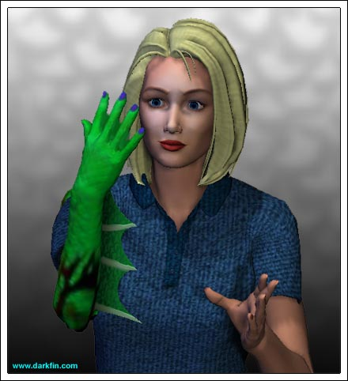
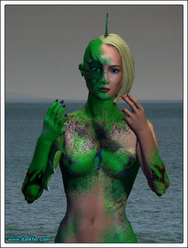

Erika (Mouth full of eggs) Are we on for polo tomorrow, Kage?
KJ (Grabbing a slice of toast and slathering it with butter and jam) Sure are - but I still don't understand why we can't play today?
Erika I have some tests to do at the lab
KJ I know you just started your job at SCU but please don't make it a habit of spending all of your time there - I just got my sister home, I'm not losing her to a bunch of eels or frat boys!
Erika (Downing her orange juice) What's the difference between the two?
KJ No fair - you were in a sorority
Erika For one year... and it was 12 months too long - don't worry, little brother, you still outrank the eels... for now
KJ Ha
Karl Sr. (Grumbling) It would be nice if both of you started showing some interest in the family business - Douglas is grooming Griffin to take over - don't get me wrong, I like the boy, but I would prefer to have one of my own children, if not both, represent our half of Meeramar
Erika Damn
KJ Sorry, sis, the company belongs to you
Pauline It would be nice if Erika finally married poor Grif and this issue would become moot
Erika (Looking up) Oh, I'm sorry mother, are you here?
Pauline (Scowling at her daughter) I swear, if they had a degree beyond a doctorate, you would've hid yourself away for another two years - when in the hell are you finally going to grow up and become a woman?
Erika As soon as you stop wearing a pink mini tennis skirt
KJ HA
Karl Sr. Hey, now
KJ (Stuffing his mouth with a doughnut) Sorry
Erika Seriously, mother, how do you define the term "woman" - meaning I marry a man and reproduce, is that it?
Pauline That's a step in the right direction!
Erika OH, FOR GOD'S SAKE - for someone who rallied with Billie Jean King to get a professional women's tour started, you sound like you're still living in the 1890's!
Pauline At least I'm living, I'm not traipsing around the globe to study seashells
Erika NO, YOU TRAIPSED AROUND THE WORLD TO HIT A FUZZY BALL
Karl Sr. Does anyone know what the weather is going to be today?
KJ Like it is 99% of the time here in California - mostly sunny, marine layer at night
Karl Sr. I read that KCON is looking for a new weatherman - you should audition
KJ Dad, I just passed the bar - now is so not the time to tell me that you always wanted me to be a meteorologist!
Erika Maybe you could've passed THAT test on the first try?
KJ (Throwing his napkin down) SHUDDUP, RIKKA
Pauline DO NOT TELL YOUR BROTHER TO SHUT UP AT THE TABLE
Erika Should I tell him on the patio instead?
Karl Sr. The old KCON weathergirl got promoted to a station in LA - I feel sorry for her - LA's not that great
Erika Oh, by the way KJ - Dr. Sanchez's wife is a tax attorney and she heads up some pro bono legal group for the poor - I told him that you would be more than happy to help her out on occasion
KJ WHY DID YOU DO THAT?
Erika Because... it's good for you, it's good for me, and it's good for society - hey, I made a rhyme!
KJ (Sighing) What's her name?
Erika Onorita or Anna Rosa or something like that - just call the number and ask for "Mrs. Sanchez"
Pauline Are there any white people left in this town?
Erika No, mother, you scared them all away when you bent over in your pink mini
Karl Sr. HA
KJ DAD
Karl Sr. Sorry
Pauline (Jumping up) I think I need some antacid and it has NOTHING to do with what I just ate
Erika (Also jumping up) I have to get to the lab
Karl Sr. The Cactus finally won a game
KJ Awesome!
Erika (Looking up and smiling) All set, Shel?
Shelby Just about - I need to drop this in Sandy's box and off I go!
Erika How's Baby Cal doing?
Shelby No longer a baby, I finally have him potty trained
Erika (Measuring a beaker) Excellent
Shelby You are telling me - however, now I have to train him to put the seat down
Erika Kage and I will be playing some polo tomorrow, you should come along
Shelby (Considering the offer) I haven't played since my days on the island
Erika Well then, you need to dust off your mallet and saddle up
Shelby (Smiling) I just might take you up on that - thank you
Shelby What happened, did the computer crash?
Erika (Softly) This is the 23rd?
Shelby Yes, why?
Erika Um... nothing
Shelby It has to be something because you look like you were just visited by the spirit world
Erika In a way, I was
Shelby I beg your pardon?
Erika (Near tears) It's the anniversary of my friend's death... three years to the day
Shelby I am very sorry, Babygirl - you should not be here - you should be at the beach making an offering... or at least at home with your family
Erika Thanks, Shelby, but I feel at peace here - I really do
Shelby Alright, if you say so
Erika (Forcing a smile) I'll see you tomorrow
Erika's Journal
It is only appropriate that I conduct my first serious transmogrification on this date. I administered the injection with the re-sequencing serum to myself exactly 32 days ago, allowing more than enough time for my DNA to adapt. I shall now administer a small dose of what I can only call the "fish cocktail" to my hand as the initial testing area. Submersion in a tank of saltwater will provide the necessary catalyst. I expect the change to fall into a 5-10 minute parameter.
Erika (Swirling her hand around in the tank) DAMMIT, COME ON
Erika (Gasping) OH, DEAR GOD - I NEVER EXPECTED THIS
Erika I... I don't believe it - I did it, I actually did it!

Erika (Hiding her hand behind her back) Yes?
Voice Campus security, Dr. von Meer, is everything alright in there?
Erika Just fine, thanks - there was a small accident but it's all cleaned up, nothing to worry about
Voice Are you sure, ma'am?
Erika Yes... thank you!
Erika I can't risk staying here - note to self - time to find a private lab somewhere
Erika (Lighting several candles around it) Well, Sammy, not quite what I was expecting... heh, it's even better
Erika (Staring at her now normal hand) This will have far-reaching effects for the medical world... for the world in general - but, right now, I need it for the Nereidium - we can play morality and ethics later
Erika (Unable to move) NO... THERE WASN'T... ENOUGH... TO DO... THIS
Erika (Feeling her life fade) I... no... can't... Sammy... help
Erika (Staring at her reflection) What... what am I?
